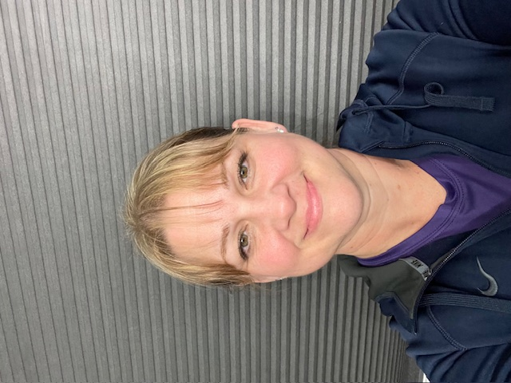

Cheryn Marie Hunter | WDD 130
Hello! My name is Cheryn Hunter and I am from Vancouver, WA. I have been married to my husband for 27 1/2 years and we have 5 children, 2 daughters-in-law, and 3 grandchildren. I love being a wife, mom and grandma! I also like to sing, play piano, read and exercise. Well, I don't really love to exercise, but I do enjoy the way I feel after I exercise. I love to do family history! One of my favorite ways to spend my time is with my husband in the temple. We try to go weekly. We live very close to the Portland Oregon Temple, but they just announced a temple in Vacouver, Washington, that will only be about 10 minutes from my house! I'm very excited to be able to spend even more time in the temple with my family! Speaking of my family...we are Disney fanatics! My two oldest children work at Disneyworld and we love to go and visit them and enjoy the parks together. One of my favorite rides is the new Guardians of the Galaxy ride at Epcot. It's amazing! I really enjoy making memories with our kids and grandkids. My favorite color is purple!